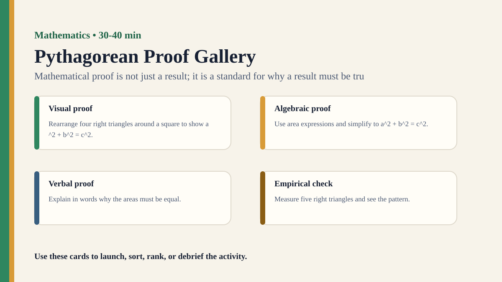

Detailed activity
Pythagorean Proof Gallery
Students compare visual, algebraic, and verbal proofs of the Pythagorean theorem and decide what makes each convincing.
Free classroom activity
Big Idea
Mathematical proof is not just a result; it is a standard for why a result must be true.
Teacher Summary
Students compare different forms of proof and the kinds of understanding each supports.
Use the familiar theorem to discuss certainty, explanation, and elegance.
Materials
- Three proof cards: visual rearrangement, algebraic derivation, and verbal explanation.
- Proof evaluation sheet.
- Notation card showing .
Ready to run
Classroom Resource Pack
Use the printable pack for concrete stimulus cards, a student recording sheet, teacher prompts, and a visual prompt image.
Visual Prompt

Student Prompt
Inspect the Pythagorean Proof Gallery stimulus. Record one first claim, the evidence you used, your confidence, and what would make you revise.
Actual Lesson Questions
| # | Question for students | Teacher cue |
|---|---|---|
| 1 | Write one claim in a complete sentence. | Teacher cue: look for a clear claim, not just a description. |
| 2 | List two pieces of evidence. | Teacher cue: students should name visible words, data, source features, method features, or contextual clues. |
| 3 | Separate observation from interpretation. | Teacher cue: this is where assumptions, framing, models, or perspective usually appear. |
| 4 | Circle one confidence level and justify it. | Teacher cue: confidence is data for the debrief, not a grade. |
| 5 | Name one piece of missing information. | Teacher cue: push for method, source, context, comparison, or definitions. |
| 6 | Answer using the activity as evidence. | Teacher cue: students should move from the classroom example to a general TOK issue. |
Concrete Stimulus Packet
Stimulus
Pattern or Proof Card
Sequence A: 2, 4, 8, 16, 32. Student claim: “The next number must be 64.” Alternative rule: double until 32, then subtract 10. Both fit the visible pattern so far.
Use this to separate pattern confidence from proof or model choice.Stimulus
Pythagorean Proof Gallery Example
Visual rearrangement proof of .
Use this as the activity-specific version of the stimulus.Stimulus
Comparison / Twist Card
Algebraic proof card plus a verbal explanation card of the same theorem.
Reveal after students commit to their first judgement.Teacher Key / Reveal
The key move is not the “right answer”; it is the moment students see how mathematical proof is not just a result; it is a standard for why a result must be true.
Setup Notes
- Prepare three proof formats and do not identify one as best at the start.
- Ask students to rank proof cards using different criteria: certainty, explanation, elegance, and accessibility.
Ready-to-Use Examples
- Visual rearrangement proof of .
- Algebraic proof card plus a verbal explanation card of the same theorem.
Run Resources
- Proof evaluation grid: assumptions, conclusion, why it must be true, what it helps you understand.
- Criteria cards: rigorous, explanatory, elegant, memorable, generalisable.
Procedure
- Display three different proofs of .
- Groups annotate what each proof shows, assumes, and leaves unclear.
- Students rank proofs by convincingness, explanatory power, and elegance.
- Groups compare whether their rankings changed across criteria.
- Debrief why mathematical knowledge values proof rather than repeated measurement alone.
Teacher Language
- A proof does more than persuade; it should show why the result must hold.
- Which proof gives certainty, and which proof gives understanding?
TOK Debrief Questions
- Knowledge question: What makes a proof convincing?
- Can a visual proof explain better than an algebraic proof?
- Is elegance a mathematical virtue or an aesthetic judgement?
Knowledge Questions
- What makes mathematical proof different from empirical confirmation?
- How do different representations support different kinds of understanding?
- Does beauty play a role in mathematical knowledge?
Sample Student Output
- The visual proof helped me understand area, but the algebraic proof felt easier to generalize.
- Elegance made a proof more satisfying, but it was not the same as validity.
Exhibition Object Idea
A visual proof diagram annotated with assumptions and explanation notes.
Adaptations
- Support: focus on two proof cards.
- Challenge: students write a fourth proof explanation for younger students.
Extension Tasks
- Students compare a proof with many measured right triangles and explain why measurement is insufficient.
- Connect mathematical elegance to aesthetic judgement in the arts.
Teacher Notes
Students do not need advanced geometry; focus on proof standards and representation.
Invite students to distinguish being persuaded from understanding why something must be true.